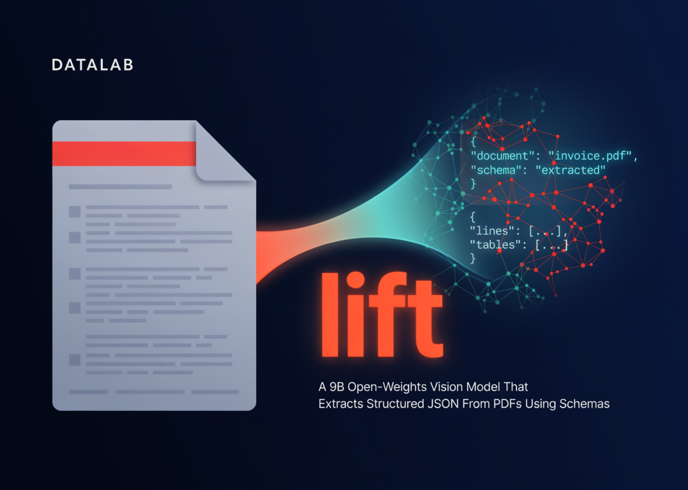

02 MarkTechPost 게시일 2026.06.23
리프트, PDF를 스키마대로 JSON화

문서 추출 모델은 보통 OCR 결과 위에 후처리를 얹거나, 범용 비전-언어모델(VLM)에 프롬프트를 씌워 필요한 필드를 뽑아낸다. 리프트는 여기서 한 걸음 더 나가, 사용자가 준 JSON 스키마 자체를 디코딩 제약으로 걸어 출력 구조를 토큰 단위로 통제한다. 여러 페이지 문서를 한 번에 넣고, 페이지를 가로지르는 값도 단일 패스(single pass)로 읽는 구조다. 대신 구조 보장은 의미 정확도까지 보장하지 않으며, 일부 스키마 기능은 제약 컴파일이 아예 되지 않는다.
원문이 말하는 핵심
리프트는 구조화 추출에 특화한 9B 오픈 웨이트 비전 모델이다. 입력으로 표준 JSON 스키마를 받으면, 그 형태에 맞는 JSON 객체를 출력한다.
- 입력: PDF, 이미지
- 출력: 스키마에 맞는 JSON
- 처리 방식: 다중 페이지 문서를 한 번에 입력
- 추론 모드: 로컬 Hugging Face, 원격 vLLM
코드는 Apache 2.0, 가중치는 수정된 OpenRAIL-M 라이선스를 사용한다.
무엇이 달라졌나
핵심 설계는 스키마 제약 디코딩이다. 리프트는 JSON 스키마를 먼저 파이단틱(Pydantic) 모델로 바꾸고, 이를 엄격한 JSON 스키마로 정규화한 뒤 vLLM의 `response_format` 제약으로 전달한다.
생성 시 서버는 이 스키마를 문법(grammar)으로 컴파일한다. 매 토큰마다 가능한 다음 토큰 중 스키마를 깨는 후보를 마스킹(masking)해 제거하므로, 출력 구조는 사후 보정이 아니라 생성 과정 자체에서 강제된다.
그래서 결과는 항상 '형태상' 맞는 JSON이 된다. 다만 값이 숫자여야 한다는 것과 그 숫자가 실제 문서의 정답이라는 것은 별개의 문제다.
정확성보다 더 중요한 절제 추출
문서 추출의 어려움은 있는 값을 읽는 것만이 아니다. 문서에 없는 값을 그럴듯하게 만들어 내지 않는 것도 같은 수준으로 중요하다.
리프트는 각 스칼라 필드를 `해당 타입 또는 null`로 넓혀 컴파일한다. 즉 필드를 비워 두는 행동이 제약에도 맞고, 학습된 행동으로도 유도된다.
실무적으로는 이 점이 중요하다.
- 빠진 필드는 오류 대신 null로 돌아올 수 있음
- required여도 null이 올 수 있음
- null은 크래시가 아니라 '모르겠다'는 절제 추출(abstention)
세금 ID처럼 없을 수 있는 항목을 억지로 채우는 모델보다, 비워 두는 모델이 후단 검증에는 더 안전할 수 있다.
벤치마크는 어떻게 읽어야 하나
Datalab은 225개 문서, 약 1만1천 개 채점 필드로 자체 벤치마크를 구성했다. 문서는 6~64페이지 길이이며, 페이지 간 값 연결, 누락돼야 하는 필드, 헷갈리게 만든 근접 후보 같은 적대적(adversarial) 사례를 포함했다.
지표는 두 가지다.
- 필드 정확도(field accuracy): 개별 필드가 맞은 비율
- 문서 정확도(full-document accuracy): 문서의 모든 필드가 다 맞은 비율
리프트는 필드 정확도 90.2%를 기록했고, 정확한 모델들 중 가장 빠른 편으로 제시됐다. 중앙값 지연은 문서당 9.5초다.
다만 문서 정확도는 20.9%로, 필드 단위 강점이 곧바로 무검수 완전 자동화로 이어지지는 않는다.
실무에서는 어디에 쓰일까
리프트는 사람이 최종 검토하는 문서 파이프라인에 잘 맞는다. 송장(invoice) 처리, 계약서 검토, 회계성 큐 처리처럼 구조화된 필드를 꾸준히 모으는 업무가 대표적이다.
권장 워크플로도 비교적 명확하다.
- 스키마 정의: 모호한 필드에는 description 추가
- 필수(required)는 정말 반드시 있어야 할 항목만 표시
- 추출 실행 후 null, 실패, 필수값 누락은 검토 큐로 분기
- 반환 JSON을 다운스트림에서 다시 스키마 검증
즉 모델 출력은 곧바로 진실값으로 쓰기보다, 검토 가능한 구조화 초안으로 다루는 편이 안전하다.
확인할 리스크
스키마 제약이 항상 걸리는 것은 아니다. `enum`, `anyOf/oneOf`, `$ref`, `additionalProperties` 같은 구성은 컴파일되지 않을 수 있다.
문제는 이때 하드 에러가 나지 않는다는 점이다.
- 경고만 기록
- 해당 호출은 제약 없이 생성 진행
- 구조 보장이 사라짐
- 반환 JSON이 스키마를 아예 따르지 않을 수 있음
따라서 호출이 성공했다고 해서 스키마 준수를 가정하면 안 된다. 지원되는 부분집합 안에서 스키마를 설계하고, 결과를 후단에서 다시 검증해야 한다.
출처와 한계
성능 수치는 Datalab 자체 벤더 결과다. 적대적 설계가 절제 추출에 유리하도록 짜였을 가능성도 있어, 다른 문서군에서 같은 우위를 그대로 기대하긴 어렵다.
또한 본문은 단일 패스, 단일 모델 추출의 한계를 분명히 적는다. 장문 문서에서 모든 필드를 완벽히 맞히는 문서 정확도는 모든 모델에서 낮았고, 리프트도 예외는 아니다.
출처: MarkTechPost, Datalab 관련 공개 자료 링크
주요 용어
원문 정보
제목: Datalab Releases lift: A 9B Open-Weights Vision Model That Extracts Structured JSON From PDFs Using Schemas
게시일: 2026.06.23
출처 URL: https://www.marktechpost.com/2026/06/23/datalab-releases-lift-a-9b-open-weights-vision-model-that-extracts-structured-json-from-pdfs-using-schemas/